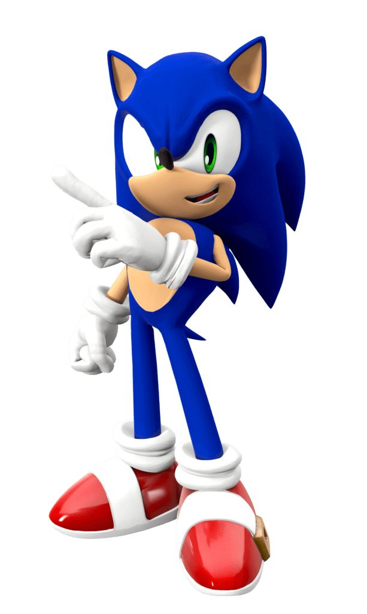
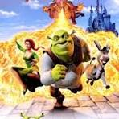

<!DOCTYPE html>
<html lang="en">
  <head>
    <meta charset="UTF-8" />
    <meta http-equiv="X-UA-Compatible" content="IE=edge" />
    <meta name="viewport" content="width=device-width, initial-scale=1.0" />
    <title>Desenhos animados="stylesheet" href="style.css" />
    <link rel="preconnect" href="https://fonts.googleapis.com&quot; />
    <link rel="preconnect" href="https://fonts.gstatic.com&quot; crossorigin />
    <link
      href="https://fonts.googleapis.com/css2?family=Poppins&display=swap&quot;
      rel="stylesheet"
    />
  </head>
  <body>
    <header class="cabecalho">
      
      <ul class="cabecalho-lista">
        <li class="cabecalho-lista-item">Sonic</li>
        <li class="cabecalho-lista-item">Shrek</li>
      </ul>
    </header>
    <section class="Sonic>
      <div class="Sonic-div-conteudo">
        <h2 class="Sonic-titulo">Sonic</h2>
        <p class="Sonic-texto-um">
          Sonic da noite de terror, ele vira lobo porque aparece a lua cheia. Os fantasma estao vestido de cavalheiros. Tem a garota fantasma, os fantasma estao tirndo fotos. Depois os fantasma viraram uns bois.
        </p>
        <p class="escola-texto-dois">
         sobre o ben10: Ele tem o relógio ele vira o xito ele vira o quatro braços ele tem uma roupa ele vira o chama ele vira o diamante ele tem o caução ele vira o aquatico ele tem tênis.
      </div>
      
            
          <h3 class="aula-nome">Robótica</h3>
           
            <span></span>
           
             
    </section>
    <footer class="rodape">
    

  </body>
</html>